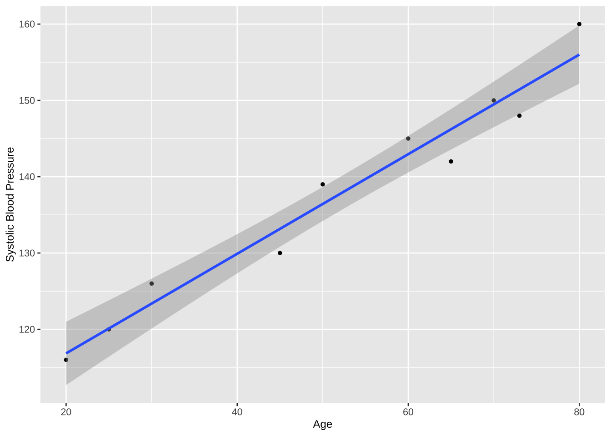
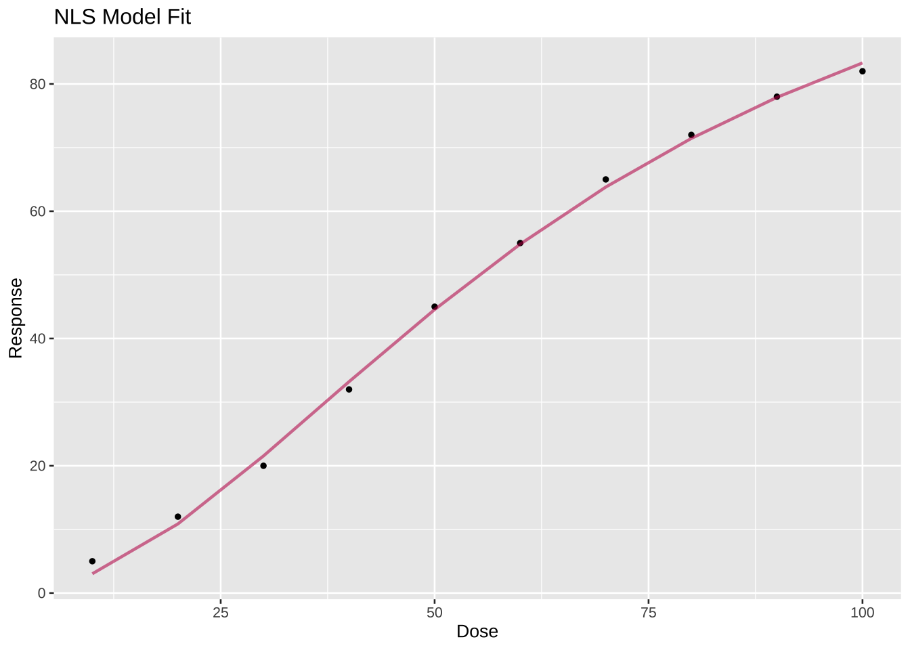

library(tidyverse)
library(ggplot2)
library(patchwork)13 Bivariate regression and correlation
Regression and correlation are two fundamental concepts in bivariate analysis, which involves examining the relationship between two variables. They provide different approaches to understanding how one variable is related to another.
13.1 Prerequisite
13.2 Simple linear regression
13.2.1 Key concepts
Simple regression analysis involves modeling the relationship between a dependent variable and an independent variable. Generally, this relationship is formulated as a simple linear regression model:
Y = \beta_0 + \beta_1 X + \epsilon
where Y is the dependent (response) variable, X is the independent (predictor) variable, \beta_0 is the intercept (value of Y when X is 0), \beta_1 is the slope (the change in Y for each one-unit change in X), \epsilon is the error term (difference between observed and predicted values).
The goal of regression analysis is to estimate the coefficients \beta_0 and \beta_1, fitting a linear equation to the data. It allows for predicting the value of Y based on a given value of X. Here is an example to illustrate the process of linear regression.
Example 1:
To determine the relationship between a patient’s age and their systolic blood pressure, a researcher gathered data from a sample of patients, including their age and systolic blood pressure readings. The data can be downloaded from the button below, where age is the independent variable (X) and systolic blood pressure is the dependent variable (Y).
df <- read_csv("datasets/ex13-01.csv", show_col_types = F)
str(df)#> spc_tbl_ [10 × 2] (S3: spec_tbl_df/tbl_df/tbl/data.frame)
#> $ age: num [1:10] 25 30 45 50 60 70 80 20 65 73
#> $ sbp: num [1:10] 120 126 130 139 145 150 160 116 142 148
#> - attr(*, "spec")=
#> .. cols(
#> .. age = col_double(),
#> .. sbp = col_double()
#> .. )
#> - attr(*, "problems")=<externalptr>A scatter plot in regression analysis visually represents the relationship between an independent variable X and a dependent variable Y. It helps in understanding whether the data fits a linear model, which is crucial for linear regression.
ggplot(df, aes(x = age, y =sbp)) +
geom_point(size = 1) +
geom_smooth(method = lm, formula = 'y ~ x', se = T) +
labs(x = "Age", y = "Systolic Blood Pressure") +
theme(
axis.title.x = element_text(size = 9),
axis.title.y = element_text(size = 9)
)
Each point represents a data pair, showing the relationship between X and Y. The line added fits the data using least squares linear regression. The shaded area around the regression line represents the 95% confidence interval, indicating the uncertainty around the predicted regression line.
If the points cluster closely around the regression line, it indicates a strong linear relationship between the variables. A narrower confidence interval suggests more precise estimates for the regression line, while a wider interval implies greater uncertainty. This method provides a visual way to understand regression analysis and assess the fit of the linear model to the data.
13.2.2 Parameter estimation
The slope \beta_1 and intercept \beta_0 are estimated using the least squares method, which minimize the sum of squared differences between observed and predicted values of Y. They can be calculated by the following derived formulas:
\beta_1 = \frac{\sum{(X_i - \bar{X})(Y_i - \bar{Y})}}{\sum{(X_i - \bar{X})^2}}
\beta_0 = \bar{Y} - \beta_1 \bar{X}
where \bar{X} and \bar{Y} are the mean values of X and Y , respectively, and X_i, Y_i are individual data points. Once you calculate the slope \beta_1 and intercept \beta_0 , you can plug them into the equation Y = \beta_0 + \beta_1 X to create your specific regression model.
Here we use lm() function to fit a simple linear regression model to predict systolic blood pressure based on age.
model <- lm(sbp ~ age, data = df)
summary(model)#>
#> Call:
#> lm(formula = sbp ~ age, data = df)
#>
#> Residuals:
#> Min 1Q Median 3Q Max
#> -4.2146 -2.5833 0.2063 2.4432 3.9962
#>
#> Coefficients:
#> Estimate Std. Error t value Pr(>|t|)
#> (Intercept) 103.79438 2.65440 39.10 2.01e-10 ***
#> age 0.65262 0.04775 13.67 7.91e-07 ***
#> ---
#> Signif. codes: 0 '***' 0.001 '**' 0.01 '*' 0.05 '.' 0.1 ' ' 1
#>
#> Residual standard error: 3.047 on 8 degrees of freedom
#> Multiple R-squared: 0.9589, Adjusted R-squared: 0.9538
#> F-statistic: 186.8 on 1 and 8 DF, p-value: 7.907e-07The output of summary(model) provides you the estimated coefficients for the intercept \beta_0 and slope \beta_1, which can be used to write the equation for your specific data. Based on the results above on this case, we can write the regression equation as:
Y = 103.79438 + 0.65262 \ X
13.2.3 Statistical inference
Statistical inference in linear regression involves making conclusions about the population parameters based on the sample data. The goal is to test hypothesis and estimate confidence intervals to determine whether there is a significant relationship between the independent and dependent variables.
- Hypothesis test
To assess whether there’s a significant linear relationship between X and Y, we perform a hypothesis test on the slope coefficient \beta_1:
- H_0: \beta_1 = 0, no relationship between X and Y.
- H_1: \beta_1 \neq 0, there is a relationship between X and Y.
To test the significance of the slope (\beta_1), the t-statistic is calculated by:
t = \frac{\hat{\beta}_1}{\text{SE}_{\hat{\beta}_1}}
where \hat{\beta}_1 is point estimate of the true coefficient \beta_1, \text{SE}_{\hat{\beta}_1} is the standard error (\text{SE}) of the slope \hat{\beta}_1 .
The F-statistic is calculated as:
F = \frac{\text{SSR} / 1}{\text{SSE} / (n - 2)}
where SSR (sum of squares due to regression) is the variation in the dependent variable explained by the predictor, SSE (sum of squares of errors) is the variation in the dependent variable that is not explained by the model, n is the number of observations.
The output of summary(model) will give you the t-statistic and p-value of the t-test, as well as the F-statistic and its associated p-value from the F-test. For this case, the t-statistic is 13.67, and its p-value is 7.91e\text{-}07. The F-statistic is 186.8, its p-value is 7.907e\text{-}07. Both test methods indicate a statistically significant relationship between the independent and dependent variable.
- Confidence interval
A confidence interval provides a range of values within which the true population parameter (\beta_1) is likely to lie with a confidence level \alpha:
\hat{\beta}_1 \pm t_{\alpha/2} \ \text{SE}(\hat{\beta}_1)
where t_{\alpha/2} is the critical value from the t-distribution.
You can use the confint() function to calculate the confidence interval of the regression coefficient.
confint(model)#> 2.5 % 97.5 %
#> (Intercept) 97.6733240 109.9154372
#> age 0.5425101 0.7627262If the confidence interval for the slope does not contain 0, it suggests that the relationship between X and Y is statistically significant. Here the confidence interval for age is [0.6328419, 0.8334338], not contain 0, the conclusion is consistent with the hypothesis test.
Statistical inference allows us to generalize the findings from our sample to the larger population and make conclusions about the strength and significance of relationships in linear regression.
13.2.4 Coefficient of determination
The coefficient of determination, commonly denoted as R^2 , is a statistical measure used in the context of regression analysis to assess the proportion of variance in the dependent variable that is predictable from the independent variable. In simple terms, it indicates the proportion of variance in Y explained by X. A value close to 1 indicates a strong linear relationship, while a value near 0 suggests a weak relationship.
In the case above, the R^2 value of 0.9589 indicates that 95.89% of the variance in systolic blood pressure is explained by the patient’s age.
13.3 Linear correlation
Linear correlation measures the strength and direction of the linear relationship between two continuous variables. The most common measure of linear correlation is the Pearson correlation coefficient, denoted by r, which ranges from -1 to +1.
13.3.1 Pearson correlation coefficient
The Pearson correlation coefficient is calculated as:
r = \frac{\sum{(X_i - \bar{X})(Y_i - \bar{Y})}}{\sqrt{\sum{(X_i - \bar{X})^2} \sum{(Y_i - \bar{Y})^2}}}
where X_i and Y_i are the individual data points of the two variables, \bar{X} and \bar{Y} are the means of the two variables.
Linear correlation, particularly using the Pearson correlation coefficient, helps quantify the strength and direction of a linear relationship between two continuous variables. Here are some plots with different values of r.
set.seed(200)
# Generating data, given sample size and r
generate_data <- function(n, r) {
x <- rnorm(n)
y <- r * x + sqrt(1 - r^2) * rnorm(n)
tibble(x = x, y = y)
}
n <- 200
r_values <- c(1, 0.9, 0.6, -1, -0.9, -0.6)
lapply(
r_values,
\(r.value) {
ggplot(generate_data(n, r.value), aes(x = x, y = y)) +
geom_point(size = 0.2, color = if_else(r.value > 0, "blue", "#A039A0")) +
ggtitle(paste("r = ", r.value))
}
) |>
wrap_plots(ncol = 3)Before conducting correlation and regression analysis, it is crucial to plot a scatterplot. A scatterplot helps to visually examine the relationship between two variables, validate assumptions for analysis, determine if a linear relationship exists, and identify any outliers. The dataset of Anscombe’s quartet was created by the statistician Francis Anscombe to illustrate the importance of graphing data before analyzing it. This dataset that consists of four sets of data with nearly identical simple descriptive statistics (mean, variance, correlation coefficient, etc.), but they have very different distributions and visual characteristics, as shown in Figure 13.1 .
data(anscombe)
anscombe_long <- anscombe |>
pivot_longer(
cols = everything(),
cols_vary = "slowest",
names_to = c(".value", "data"),
names_pattern = "(.)(.)"
)
# Plot all four datasets
ggplot(anscombe_long, aes(x = x, y = y)) +
geom_point(size = 1.2) +
geom_smooth(method = 'lm', formula = 'y ~ x', se = F, linewidth = 0.6) +
facet_wrap(~ data, scales = "free")
Example 2:
Assume a dataset where we have collected BMI and cholesterol readings for a group of patients. Let’s look at the correlation between BMI and cholesterol levels in a this study.
df <- read_csv("datasets/ex13-02.csv", show_col_types = F)
str(df)#> spc_tbl_ [10 × 2] (S3: spec_tbl_df/tbl_df/tbl/data.frame)
#> $ bmi : num [1:10] 22.1 27.3 30.5 25 28.2 32.1 21.7 26.9 29 33.2
#> $ chol: num [1:10] 180 195 210 185 200 220 175 190 205 215
#> - attr(*, "spec")=
#> .. cols(
#> .. bmi = col_double(),
#> .. chol = col_double()
#> .. )
#> - attr(*, "problems")=<externalptr>ggplot(df, aes(bmi, chol)) +
geom_point(size = 1) +
geom_smooth(method = lm, formula = 'y ~ x', se = T) +
labs(
x = "BMI",
y = "Cholesterol"
) +
theme(
axis.title.x = element_text(size = 9),
axis.title.y = element_text(size = 9)
)Here we use cor() function to calculate the correlation coefficient:
with(df, cor(bmi, chol, method = "pearson")) #> [1] 0.976926713.3.2 Statistical inference
In linear correlation, we not only calculate the correlation coefficient but also test its significance, create confidence intervals, and interpret the result in the context of the data.
- Hypothesis test
To make statistical inferences about the correlation, we test the following hypotheses:
- H_0 : There is no linear relationship between the two variables (ρ = 0).
- H_1 : There is a linear relationship between the two variables (ρ ≠ 0 for a two-tailed test, ρ > 0 or ρ < 0 for a one-tailed test).
Calculate the t-statistic by:
t = \frac{r \sqrt{n - 2}}{\sqrt{1 - r^2}}
- Confidence interval
The confidence interval provides a range of values that likely contain the population correlation ρ. The formula for the confidence interval of the correlation coefficient depends on the Fisher transformation. First apply the Fisher transformation to r:
z = \frac{1}{2} \ln \left( \frac{1 + r}{1 - r} \right)
Then construct the confidence interval for z:
z \pm z_{\alpha/2} \frac{1}{\sqrt{n - 3}}
Finally transform it back to the correlation scale:
r = \frac{e^{2z - 1}}{e^{2z + 1}}
The cor.test() function is used to test the association between two numeric variables, and when you specify method = "pearson", it performs a Pearson correlation test to measure the strength and direction of the linear relationship between them.
cor.test(~ bmi + chol, data = df, method = "pearson")#>
#> Pearson's product-moment correlation
#>
#> data: bmi and chol
#> t = 12.938, df = 8, p-value = 1.206e-06
#> alternative hypothesis: true correlation is not equal to 0
#> 95 percent confidence interval:
#> 0.9023104 0.9947088
#> sample estimates:
#> cor
#> 0.9769267This result indicates a strong positive correlation (r = 0.9769267), with a p-value of 1.206e\text{-}06, which suggests the correlation is statistically significant. The t-statistic and 95% confidence interval is provided as well.
13.3.3 Some considerations
To ensure the estimate and inference of linear regression model are valid, the following assumptions should be met:
- Linearity: The relationship between X and Y must be linear.
- Independence: Observations must be independent of each other.
- Homoscedasticity: Constant variance of residuals across all levels of X.
- Normality of Residuals: The residuals (errors) should be approximately normally distributed.
To validly use the Pearson correlation coefficient and its statistical tests, the following assumptions should be met:
- Linearity: The relationship between the two variables must be linear.
- Normality: The two variables should be approximately normally distributed.
- Homoscedasticity: The variability in one variable should be the same at all levels of the other variable.
Residual Plots in Regression
Using a residual plot is a key step in examining whether the data meets the assumptions required for a linear regression model. Residual plots display the residuals on the vertical axis and the predicted values or independent variable on the horizontal axis. Here is the residual plot on the basis of the data from Example 1.
df <- read_csv("datasets/ex13-01.csv", show_col_types = F)
# Fit a linear regression model
model <- lm(sbp ~ age, data = df)
# Create a residual plot using ggplot2
ggplot(df, aes(x = fitted(model), y = resid(model))) +
geom_point() +
geom_hline(yintercept = 0, color = "red") +
xlab("Fitted Values") +
ylab("Residuals")If the residuals appear randomly scattered around zero with no clear patterns, the assumptions of linearity, homoscedasticity, and independence are likely satisfied. If any patterns or issues are identified, you may need to consider transforming variables or using a different model to better fit the data.
If these assumptions are violated, non-parametric alternatives such as Spearman’s rank correlation can be used.
13.4 Rank correlation
Rank correlation is a measure of the relationship between two variables based on the rank ordering of the data, rather than the raw data values. It assesses how well the relationship between two variables can be described by a monotonic function, meaning as one variable increases, the other tends to increase (positive correlation) or decrease (negative correlation). Rank correlation is especially useful when dealing with ordinal or non-normally distributed data, such as in patient ratings, clinical scores.
13.4.1 Spearman’s rank correlation
Spearman’s rank correlation coefficient r_s measures the strength and direction of the association between two ranked variables. It is a non-parametric measure, meaning it does not assume a linear relationship or normally distributed data.
r_s = 1 - \frac{6 \sum d_i^2}{n(n^2 - 1)}
where d_i is the difference between the ranks of corresponding values and n is the sample size.
13.4.2 Spearman’s r_s for tied ranks
When there are tied ranks, the denominator of the formula needs to be adjusted because the calculation assumes unique ranks. The correction ensures the ranks are properly weighted to reflect the presence of ties, improving the reliability of the coefficient. The correction involves calculating a factor that accounts for the groups of tied values.
The corrected formula for Spearman’s r_s with ties is:
r_s = \frac{n(n^2 - 1) - 6 \sum d_i^2 - T_x - T_y}{\sqrt{(n(n^2 - 1) - T_x)(n(n^2 - 1) - T_y)}}
where T_X and T_Y are the tie correction factors for each variable, calculated as follows:
T = \sum (t_j^3 - t_j) / 12
where t_j is the number of tied values in the j\text{-}th group of ties. This sum is calculated over all groups of tied ranks.
Example 3:
Consider a study where researchers want to see the correlation between pain score and mobility score in patients with arthritis. They collected the scores from 15 patients, both are ranked from 1 to 10. The data can be accessed from the button below.
df <- read_csv(
file = "datasets/ex13-03.csv",
col_types = list(
pain_score = col_integer(),
mobi_score = col_integer()
)
)
str(df)#> spc_tbl_ [15 × 2] (S3: spec_tbl_df/tbl_df/tbl/data.frame)
#> $ pain_score: int [1:15] 3 5 6 8 7 9 2 4 5 6 ...
#> $ mobi_score: int [1:15] 7 6 5 4 3 2 8 7 6 5 ...
#> - attr(*, "spec")=
#> .. cols(
#> .. pain_score = col_integer(),
#> .. mobi_score = col_integer()
#> .. )
#> - attr(*, "problems")=<externalptr>The cor() function can be used to estimate Spearman’s rank correlation coefficient.
with(df, cor(pain_score, mobi_score, method = "spearman"))#> [1] -0.952515You can also use the cor.test() function to perform Spearman’s rank correlation test with method = "spearman".
cor.test(~ pain_score + mobi_score, data = df, method = "spearman")#> Warning in cor.test.default(x = mf[[1L]], y = mf[[2L]], ...): Cannot compute
#> exact p-value with ties#>
#> Spearman's rank correlation rho
#>
#> data: pain_score and mobi_score
#> S = 1093.4, p-value = 4.378e-08
#> alternative hypothesis: true rho is not equal to 0
#> sample estimates:
#> rho
#> -0.952515In the output a warning occurs, noting that the data has ties. To correct for ties, you can set the argument exact = FALSE, which ensures the function handles ties and applies the necessary corrections.
cor.test(~ pain_score + mobi_score, data = df, method = "spearman", exact = F)#>
#> Spearman's rank correlation rho
#>
#> data: pain_score and mobi_score
#> S = 1093.4, p-value = 4.378e-08
#> alternative hypothesis: true rho is not equal to 0
#> sample estimates:
#> rho
#> -0.952515The result shows a strong monotonically negative relationship between the pain_score and mobi_score (r_s = -0.952515). The p-value is smaller than significance level 0.05, reject the null hypothesis and conclude that there is a significant monotonic relationship between the two variables. The test statistic used in determining the p-value is S = 1093.4.
13.5 Curve fitting
Curve fitting is the process of finding a curve that best fits a given set of data points. It is commonly used when the relationship between the independent variable X and dependent variable Y is not linear, and a more complex model is needed to describe the data. Curve fitting can be used in many fields, including biology and the medical sciences.
13.5.1 Types of curve fitting models
- Linear fit: A straight line that best describes the data. The equation is typically of the form y = a + bX . Example: Simple linear regression.
- Polynomial fit: A polynomial function is used to fit the data. The equation might look like Y = aX^2 + bX + c or higher-degree polynomials. Example: Quadratic, cubic, or higher-order polynomial fits.
- Exponential fit: For exponential growth or decay, the model is typically of the form Y = a \cdot e^{bx}. Example: Growth of populations or the decay of radioactive material.
- Logarithmic fit: A logarithmic function is used, of the form Y = a \cdot \ln(X) + b, where \ln(X) is the natural logarithm of X.
- Power-Law fit: This follows the form y = ax^b, where the relationship between variables is a power function.
- Sigmoidal fit: Sigmoid curves are often used for biological processes that show an S-shaped response, like population growth models. A common form is Y = \frac{a}{1 + e^{-bX}}.
Example 4:
Assume we have a data from a study that tests different dosages of a drug and the corresponding effect on patients’ blood pressure reduction. The data can be downloaded from the button below, where dose represents the drug dose (mg) and response represents the percentage of blood pressure reduction. Let’s model the relationship between drug dosage and the body’s response.
13.5.2 Steps for curve fitting
Data preparation
Ensure you have collected data, typically with an independent variable X and a dependent variable Y.
df <- read_csv(file = "datasets/ex13-04.csv", show_col_types = F) str(df)#> spc_tbl_ [10 × 2] (S3: spec_tbl_df/tbl_df/tbl/data.frame) #> $ dose : num [1:10] 10 20 30 40 50 60 70 80 90 100 #> $ response: num [1:10] 5 12 20 32 45 55 65 72 78 82 #> - attr(*, "spec")= #> .. cols( #> .. dose = col_double(), #> .. response = col_double() #> .. ) #> - attr(*, "problems")=<externalptr>
Data visualization
Use a scatter plot to visualize the raw data and check for trends or outliers.
ggplot(df, aes(x = dose, y = response)) + geom_point() + geom_smooth(method = 'loess', formula = 'y ~ x', se = F)The plot shows a S-shaped curve on the relationship between the two variables.
Choose a model
Based on the plot and theoretical background, the Logistic model Y = \frac{1}{1 + e^{a + b\ln(X)}} is adopted.
Perform the Fitting
Use statistical software to perform the fitting. You can use
lm()for linear regression ornls()for nonlinear fitting. For nonlinear models, you usually need to provide initial parameter guesses. Parameters can be set based on data trends or prior experience. When using nonlinear fitting functions (e.g.,nls()), initial parameter guesses are critical.model <- nls( response ~ (120 / (1 + exp(a + b * log(dose)))) , data = df, start = list(a = 8, b = -1) ) summary(model)#> #> Formula: response ~ (120/(1 + exp(a + b * log(dose)))) #> #> Parameters: #> Estimate Std. Error t value Pr(>|t|) #> a 8.12807 0.18750 43.35 8.84e-11 *** #> b -1.94301 0.04505 -43.13 9.22e-11 *** #> --- #> Signif. codes: 0 '***' 0.001 '**' 0.01 '*' 0.05 '.' 0.1 ' ' 1 #> #> Residual standard error: 1.262 on 8 degrees of freedom #> #> Number of iterations to convergence: 7 #> Achieved convergence tolerance: 5.276e-06From the result we can write the fitted equation as:
Y = \frac{120}{1 + e^{8.128-1.943\ln(X)}}
Check the fit
Model diagnostics: Use residual plots to check if the residuals meet assumptions such as independence and normality. Check the residuals to ensure that they are randomly scattered and do not show patterns that suggest a poor fit.
# Create a residual plot using ggplot2 ggplot(df, aes(x = fitted(model), y = resid(model))) + geom_point(size = 1) + geom_hline(yintercept = 0, color = "red") + xlab("Fitted Values") + ylab("Residuals")Goodness of fit test: Use R-squared or adjusted R-squared to evaluate how well the linear model fits the data. For nonlinear models, you may use the sum of squared residuals or AIC/BIC values.
AIC(model)#> [1] 36.7957Visual inspection: Always plot the data with the fitted curve to visually check if the fit seems reasonable.
ggplot(df, aes(x = dose, y = response)) + geom_point(size = 1) + geom_line(aes(y = fitted(model)), color = "#C0035490", linewidth = 0.8) + labs(title = "NLS Model Fit", x = "Dose", y = "Response")
This allows you to visualize both the raw data (points) and the fitted model (line) on the same plot.